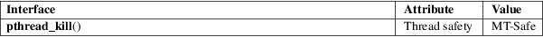

pthread_kill − send a signal to a thread
POSIX threads library (libpthread, −lpthread)
#include <signal.h>
int pthread_kill(pthread_t thread, int sig);
Feature Test Macro Requirements for glibc (see feature_test_macros(7)):
pthread_kill():
_POSIX_C_SOURCE >= 199506L || _XOPEN_SOURCE >= 500
The pthread_kill() function sends the signal sig to thread, a thread in the same process as the caller. The signal is asynchronously directed to thread.
If sig is 0, then no signal is sent, but error checking is still performed.
On success, pthread_kill() returns 0; on error, it returns an error number, and no signal is sent.
|
EINVAL |
An invalid signal was specified. |
For an explanation of the terms used in this section, see attributes(7).

The glibc implementation of pthread_kill() gives an error (EINVAL) on attempts to send either of the real-time signals used internally by the NPTL threading implementation. See nptl(7) for details.
POSIX.1-2008 recommends that if an implementation detects the use of a thread ID after the end of its lifetime, pthread_kill() should return the error ESRCH. The glibc implementation returns this error in the cases where an invalid thread ID can be detected. But note also that POSIX says that an attempt to use a thread ID whose lifetime has ended produces undefined behavior, and an attempt to use an invalid thread ID in a call to pthread_kill() can, for example, cause a segmentation fault.
POSIX.1-2008.
POSIX.1-2001.
Signal dispositions are process-wide: if a signal handler is installed, the handler will be invoked in the thread thread, but if the disposition of the signal is "stop", "continue", or "terminate", this action will affect the whole process.
kill(2), sigaction(2), sigpending(2), pthread_self(3), pthread_sigmask(3), raise(3), pthreads(7), signal(7)